Ciclo de Amor y Muerte: Un Festival de Emociones en el Teatro Nacional Cervantes
¡Bienvenidos al "Ciclo de Amor y Muerte", un apasionante festival de teatro que promete explorar los límites de las emociones humanas en el escenario del majestuoso Teatro Nacional Cervantes! Durante el mes de marzo de 2024, este renombrado teatro de Buenos Aires se transformará en el epicentro de una experiencia teatral única, donde el romance, el desamor, el suspenso y el terror se entrelazan para ofrecer un viaje inolvidable a través de las pasiones humanas.
